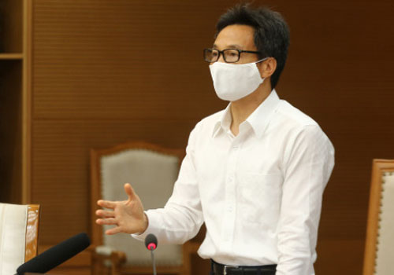

Khả năng còn còn nguồn dịch trong cộng đồng
(Dân trí) - Họp khẩn với Đà Nẵng, Bắc Ninh, Bắc Giang, Phó Thủ tướng Vũ Đức Đam xác định khó khăn lớn nhất khi dịch phát sinh trong các khu công nghiệp là năng lực xét nghiệm cho kịp tốc độ truy vết Covid-19…
|
TIN TỨC SỰ KIỆN
|
Cột 3 |